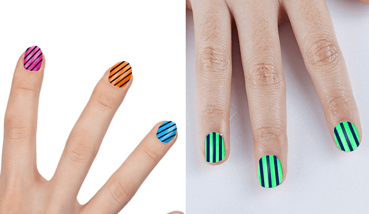

How To Design A Nail Design Like That ?
Creating beautiful nail designs requires regular practice. However, for the simple nail designs for kids, you just need to paint the nails with the base color and stick interesting shapes on the nails. Here are the instructions for creating them.
- Paint your baby's nails with a base coat. It can then be painted in any color like pink, blue, green or black. You can also paint different colors on each nail. Make sure you dry the base coat properly, before applying other colors.
- Nail design takes time and patience. Choose the design you want to draw on your baby's nails. Choose a simple design. Sketch this design on paper for reference. You can also color the nail design with colors of your choice, in case you want to see how it will look when finished.
- Choose a color for the nail design to stand out on top of the base polish. Paint and paint over your baby's nails with your chosen color.
- Always dry any coats of paint before adding a new one. Painting children's nails is hard work. Here is my secret. I made a little plastic funnel with a small end and put some paint in it. Then using this funnel I will draw any intricate shape on the nail easily or you can also use a nail art pen to design.
- To spice up your baby's nails, try these ideas. If she's going to a party, add glitter on her nails. Use transparent glitter polish to cover the nail design to create a party atmosphere. If you want more shine on your nails, apply a glossy top coat over the model. This top coat can help protect your baby's nail designs .
Lovely Nail Design Ideas:
1. Food pictures on nails
Paint her nails any color she likes, for example bright yellow, dark green or deep pink. Decide what kind of food you want to paint on your nails. It can be ice cream, pies, pizza, or fruit like watermelon, pineapple, banana, etc.
2. Stripe Design
Paint the base color according to the child's liking. Draw straight stripes in the direction you choose. You can combine different colors with the background layer and stripes. Some examples are red and white, black and white, blue and yellow, etc.
3. Seasonal nail designs
To paint a seasonal theme on your baby's nails, try these nail design ideas . On top of the base paint, draw a rainbow, an umbrella, a raindrop, a cloud, or any other weather image your child wants. You can also draw with a summer theme, like sun, sunglasses, hat, fruit, etc.
4. Music on nails
Design any musical instrument such as guitar, piano, flute, etc. for your child to participate in music class. Paint your baby's nails with a background color and draw a simple musical instrument design on top.
5. Personalized nail designs
For this idea you can use a light or dark base paint. Draw different shapes like stars, triangles, hearts, squares, etc. You can also decorate your baby's nails with game designs like tic-tac-toe or connect 4.
6. Animals on the nails
Paint your child's nails dark green or any fur color. The base coat will add a jungle feel to the nail design . On the background layer, draw animals such as bears, monkeys, giraffes, etc.